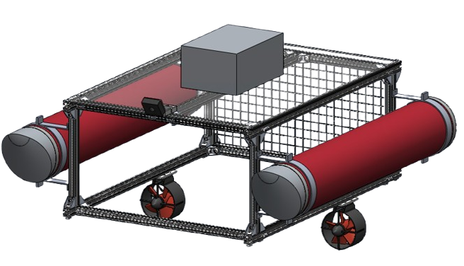
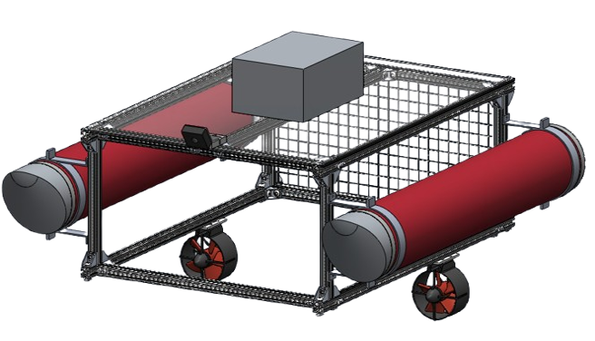

Autonomous Aquatic Vehicle for Plastic Waste Collection
Over the course of my senior year at WPI, I worked with a team of six to design, manufacture, and program an aquatic robot to identify and collect floating plastic waste along shorelines. I lead the design of the frame of the robot from scratch in SolidWorks. I helped with the manufacturing and assembly of the robot, specifically the water-proofing of the pontoons.
 

Once the base robot was complete, I was in charge of robot localization using onboard IMU and GPS sensors. I created an Extended Kalman Filter that combined acceleration and orientation data from IMU with position data from the GPS to determine the robot's local pose. We tested our robot in the real world and successfully identified and collected trash. At the end of the year, we wrote and submitted a paper detailing the full year's work.
Romi Robots
Over the course of my senior year at WPI, I worked with a team of six to design, manufacture, and program an aquatic robot to identify and collect floating plastic waste along shorelines. I lead the design of the frame of the robot from scratch in SolidWorks. I helped with the manufacturing and assembly of the robot, specifically the water-proofing of the pontoons.
Once the base robot was complete, I was in charge of robot localization using onboard IMU and GPS sensors. I created an Extended Kalman Filter that combined acceleration and orientation data from IMU with position data from the GPS to determine the robot's local pose. At the end of the year, we wrote and submitted a paper detailing the full year's work.